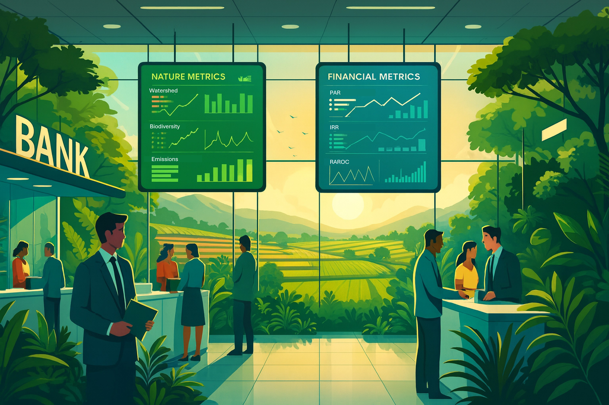
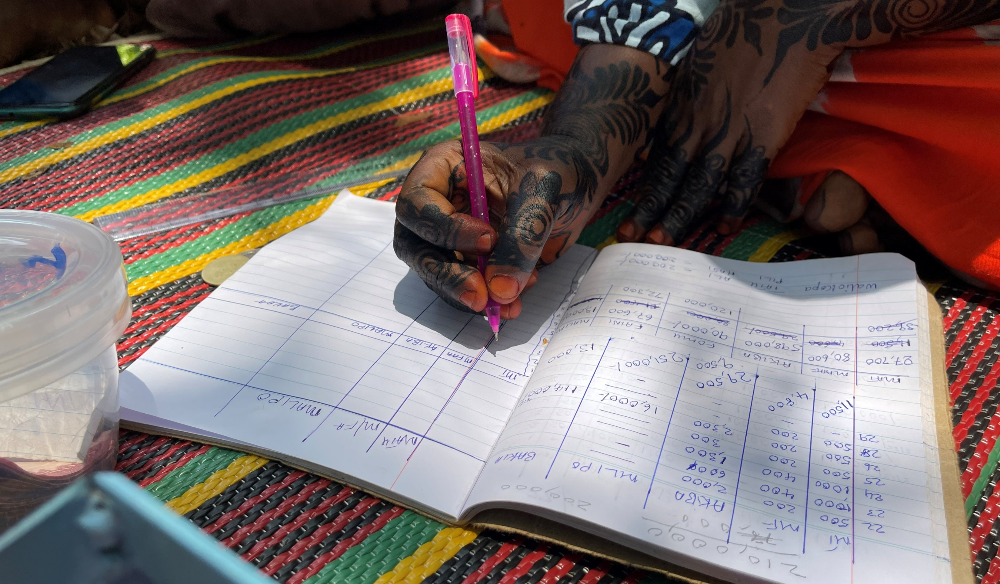

<title>Ecosystem Equity</title>
<meta name="description" content="Ecosystem Equity develops green financial instruments, 
linking finance to environmental sustainability.">


 
  <section>
  <h2>How to pay for healthy ecosystems?</h2>
  <p>
    Ecosystem Equity was created to explore sustainable financial incentives 
    for maintenance and restoration of healthy and productive ecosystems, 
    including farmland, fisheries, forests and rangelands. 
  </p>
  <p>  
    This work led us to consider how information about value creation, as well as real resoures, 
    flow through an economy. We started looking for ways to integrate financial and environmental wealth, 
    and then to ask how banks might be reimagined, not just as guardians and builders of financial wealth 
    but of environmental and social capital too.
  </p>
    
 
  <h3>Our chief contribution is "eco-credit"</h3>
  <p>
  Eco-credit is a loan that adds an obligation for ecological restoration 
  alongside repayment of principal and interest. The intention is that 
  ecological restoration, as a term of the loan agreement, balances 
  ecological damage caused by the financed activity. The eco-credit approach, and other 
  tools we developed, have been adopted and used by 
  <a href="https://greenfi.org" target="_blank" rel="noopener">Greenfi.org</a>, 
  <a href="https://mwambao.or.tz/eco-credit-model/" target="_blank" rel="noopener">the Mkuba Programme</a>, 
  <a href="https://www.redaa.org/devolving-resilience-finance-community-level" target="_blank" rel="noopener">Nature Fundi</a>, 
  the <a href="https://www.comred.or.ke/program/eco-credit-and-livelihood-program" target="_blank" rel="noopener">Kwale Eco-Credit Project</a>, 
  <a href="https://seasense.or.tz/fileadmin/04-downloads/Sea_sense_Annual_Report_2024.pdf" target="_blank" rel="noopener">Sea Sense</a>, 
  the <a href="https://crdbbank.co.tz" target="_blank" rel="noopener">Cooperative and Rural Development Bank in Tanzania</a>, 
  and Tree Fundi (still under development).
</p>

  

  <h3>Recognition</h3>
  <p>
    Ecosystem Equity's work has been recognised with several awards and prizes, 
    including the United Nations / Morgan Stanley Global Prize for Climate 
    Change Finance Innovation, Global Innovation Lab for Climate Finance, 
    a SwissRe ReSource Prize, a Mastercard Zambezi Innovation Prize, 
    a ClimateKIC Award and a Conservation Finance Alliance Prize.
  </p>
  

  
    <a href="#insight" data-section="insight" class="cta-link">
      Continue to Insight
    </a>
  </p>
</section>
